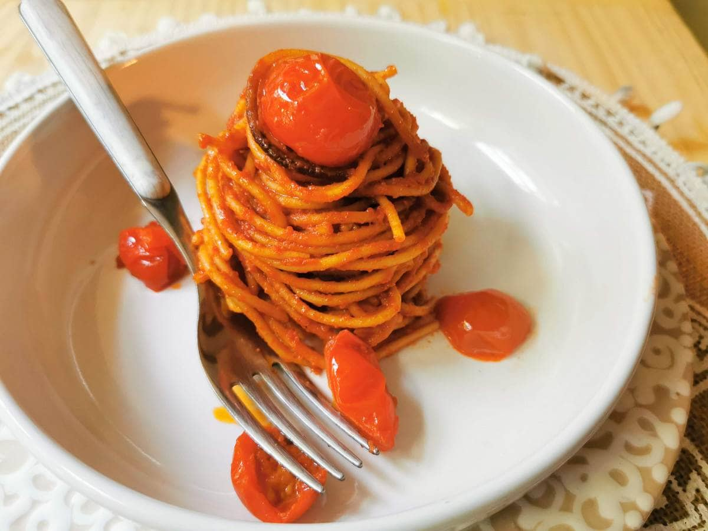

Spaghetti Alla'Assassina

Ingredients
- ¼ cup olive oil
- 2 teaspoons red chili flakes, or to taste
- salt to taste
- 1 tablespoon finely chopped parsley, for garnish
Directions
- Heat olive oil in a pot over medium heat. Add garlic and sizzle until it starts to turn golden and fragrant, about 1 minute. Stir in tomato puree, water, and salt. Bring to a simmer on medium-high. Once simmering, reduce to low heat and keep warm.
- Pour olive oil into a large non-stick skillet over medium-high heat, season with chili flakes and heat until chili flakes start to sizzle, for 1 minute. Add raw spaghetti and toss until well coated with chili oil.
- Pour in about 3 cups of tomato broth and, using tongs, move pasta from side to side to evenly distribute tomato broth. Cook, occasionally moving pasta from side to side with tongs, all facing the same direction, until most of the broth has been absorbed or evaporated, and the spaghetti starts frying in the pan.
- Turn spaghetti over with tongs, and evenly arrange in the pan. Keep cooking until the pasta starts to brown, and even lightly chars.
- Serve with a drizzle of olive oil and more chili flakes if desired.
- Enjoy!